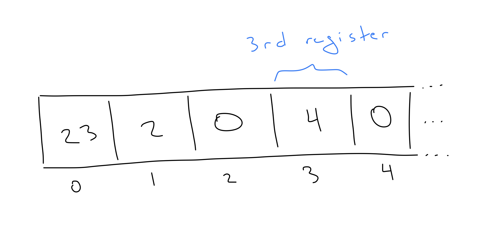
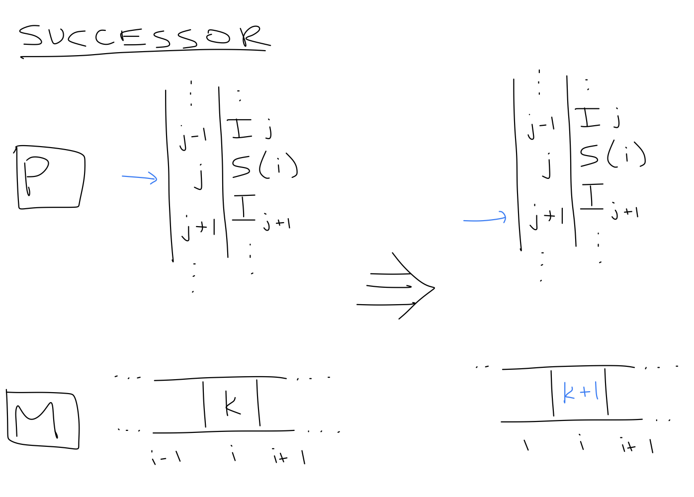
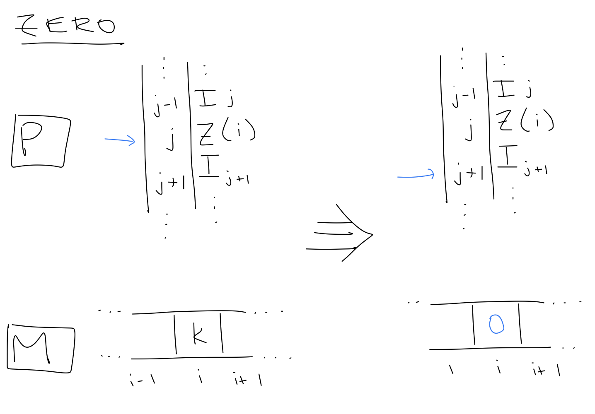
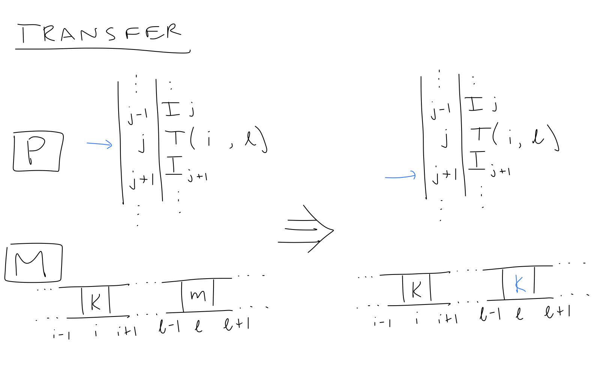
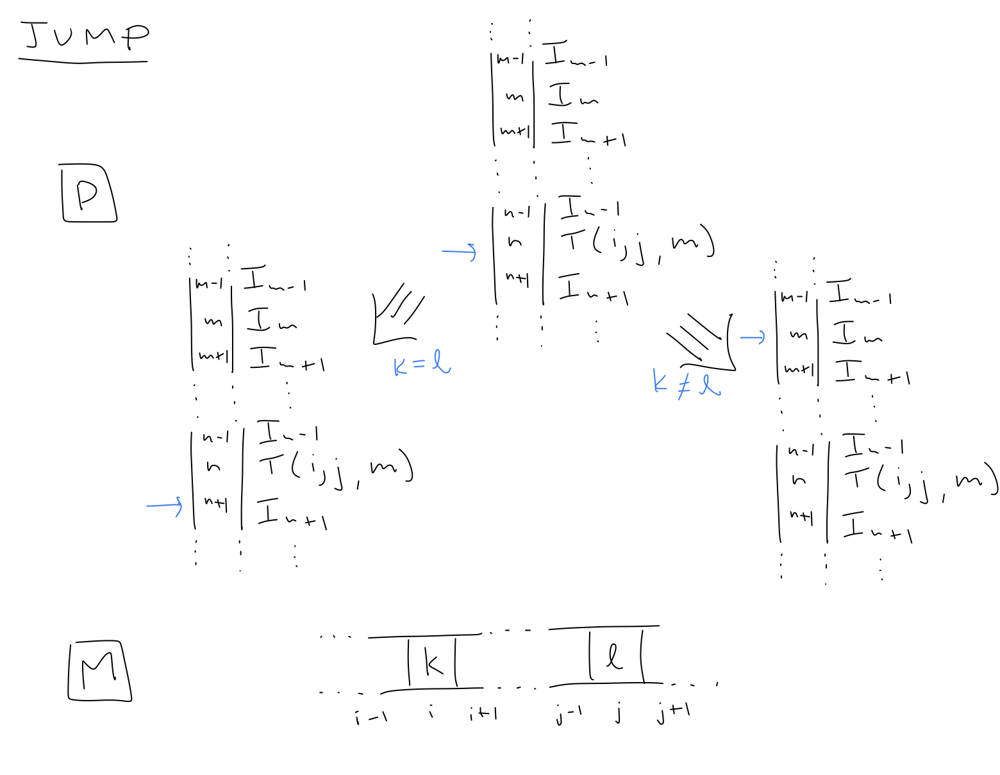

We begin our somewhat unconventional journey into programming with an examination of unlimited register machines (URMs). These mathematical objects are used by N.J. Cutland in his book Computability as a model of computation for proving theorems in computability theory, a subfield of logic. We'll be using the simple programming language accompanying URMs as a testing ground for basic concepts. Because it's so simple, we'll be able explore pretty much all of it in one sitting. From this exercise, I hope to emphasize two points.
A URM is comprised of a collection of registers, which may be thought of as boxes or containers, that can hold any natural number (0, 1, 2, and so on). These registers are usually visualized as being arranged in a single row from left to right, so that we may refer to the \(i\)th register as the one in the \(i\)th position. A note: the convention in computer science is to zero index sequences, which is to say that the \(0\)th element of a sequence refers to the element at the front, the \(1\)st element refers to the element after that, and so on.

Despite their simplicity, URMs are not unreasonable models of real computers, which do store numeric values in fixed locations of their hardware. The model diverges from reality in how these locations are arranged, how they are accessed, and the range of values they can store.
The basic building blocks of a URM program are instructions, of which there are only four:
S(i),Z(i),T(i), andJ(i, j, k),where i, j and k are arbitrary natural numbers. A URM program is a sequence of instructions. We'll write URM programs so that each instruction appears on its own line.
Though these instructions have suggestive names, a program is a syntactic object; it is just a collection of symbols. This is one of the beauties of programming; the wildly complex consequences of computer programs start with plain text files. A program is meaningless without a model of execution. In practice, a language has an interpreter, another program that executes programs in that language, i.e., that implements its model of execution. This might, at first, seems terribly circular (a program for running other programs, where does it end?) though it should feel less so in time.
Strictly speaking, we will be using a Swift compiler, not an interpreter (through I sometimes find the distinction a bit artificial). Whereas an interpreter executes programs of another language, a compiler translates code from one language into code of other than can be run on the machine you are using. The distinction is inconsequential for this course, except that I will refer to the Swift compiler (not interpreter) in the material.
In the model of execution for URM programs, we maintain a URM \(M\) and a natural number \(c\). The number \(c\) represents the index of the next instruction to be executed and is initially set to \(0\). We can imagine \(c\) as an arrow that points at the next instruction (and I will draw it this way below). The initial state of \(M\), before any instructions have been executed, is specified by a finite sequence of natural numbers called inputs. The \(i\)th element in the sequence is put in the \(i\)th register of \(M\), and all other registers store the number \(0\). Given a program \(P\) and a sequence of inputs, \(M\) is initialized according to the inputs and then \(M\) and \(c\) are updated according to the following rules.
S(i), the value of the \(i\)th register of \(M\) is increased by one and \(c\) is increased by one.Z(i), the value of the \(i\)th register of \(M\) is set to \(0\) and \(c\) is increased by one.T(i, j) then the value of the \(i\)th register of \(M\) is copied into the \(j\)th register of \(M\) and \(c\) is increased by one.J(i, j, k), then \(c\) is set to \(k\) if the \(i\)th register and the \(j\)th register of \(M\) contain the same value. Otherwise, \(c\) is increased by one.These rules can be visualized as follows.




These rules are carried out as long as possible. When \(c\) is greater than or equal to the number of instruction in \(P\), the program is said to terminate and its output is the value in the \(0\)th register. It's possible that a program never terminates, like the program
J(1, 1, 0)with a single jump instruction. In general, the jump instruction is the only one that allows you to move backwards in a program, so it gives power to the language but can also cause the most trouble.
And that's it, you've just learned a programming language in it's entirety, albeit a simple one. Though, from a theoretical perspective this language is just as powerful as Swift, it is so-called Turing complete. Imagine trying to write iOS applications in this language!
We've just described a simple programming language in two separate parts: its syntax and its semantics. Its syntax is the collection of guidelines for determining those arrangements of symbols, those plain text files, which constitute well-formed programs. Its semantics is the collection of rules for determining the meaning of those well-formed programs. The strict separation of syntax and semantics is crucial in the enterprise of programming, though the full scope of reasons why might not be fully appreciable at the moment. One reason of particular importance to us now is that it provides a possible justification for why programming is so interesting. It's obvious that syntactically equivalent programs, programs composed of identical arrangements of symbols, should be semantically equivalent, they should do the same thing. But there are so many syntactically distinct programs which are semantically equivalent; determining which one is the "right" one in a given context is the role of the programmer.
Suppose we want to compute the sum of two natural numbers. That is, we want to write a program that, given inputs \(x\) and \(y\), terminates with output \(x + y\). One approach is to increment the value of the \(0\)th register, which contains \(x\), as many times as the value in the \(1\)st register, which contains \(y\). We can do this by maintaining a counter in a third register which is incremented at the same rate as the \(0\)th register. The program should then terminate if the counter register has the same value as the \(1\)st register, which can be done using a jump instruction. Here is such a program, which we will refer to below as BIN-ADD.
J(1, 2, 100)
S(0)
S(2)
J(0, 0, 0)A couple notes about this program:
Here is an animation of an example computation with inputs \(2\) and \(3\).
Simple enough, for a more complicated example, suppose we want to determine if a given number is odd. That is, we want to write program that, given a single input \(n\), outputs \(1\) if \(n\) is odd and \(0\) if \(n\) is even. One approach would be to maintain a counter, starting at \(1\), and then add two to the counter periodically, seeing if \(n\) is equal to the counter at any point. This would work if \(n\) is actually odd, but what if \(n\) is even? This approach would, say, check if \(4\) is equal to \(1\), then \(3\), then \(5\), then \(7\)...and so on forever. How can we fix this?
(I recommend taking a pause at this point and thinking about it before reading the next paragraph.)
One approach: we keep track of two counters, one starting at \(0\) and one starting at \(1\), add two to each of them periodically and check if \(n\) is equal to either. If at any point \(n\) is equal to one of the counters, depending on which counter it is, we know if \(n\) is even or odd.
The last sticking point: we need to do something different depending on which counter \(n\) is equal to in the end. How do we do this? It'll take a bit of mental gymnastics with the jump operation. We can jump to different parts of the program depending on the different cases. In all, we get the following program.
S(2)
J(0, 1, 8)
J(0, 2, 10)
S(1)
S(1)
S(2)
S(2)
J(0, 0, 1)
Z(0)
J(0, 0, 100)
Z(0)
S(0)The first line starts one of the counters at \(1\), and then the input value is compared periodically to the two counters that are incremented by two each iteration. Once the input is equal to one of the counters the program jumps to either line 8 or 10, which represent to two possible output branches. Note, in particular, the jump instruction at line 9, that ensures that lines 10 and 11 are not run if the branch at line 8 is taken. Here is an animation of this process with input \(3\).

You will have an opportunity to see more examples in the assignment for this module.
Suppose we want to compute the sum of three numbers. We can do this by computing the sum of the first and second number, and then computing the sum of the result and the third number. Let's call this program TRI-ADD.
J(1, 3, 4)
S(0)
S(3)
J(0, 0, 0)
J(2, 4, 100)
S(0)
S(4)
J(0, 0, 4)We are performing a rough form of program composition here, where the output of one program is fed into another program. The first half and the second half of this program look similar because they both are, in essence, the same as BIN-ADD. This process can be generalized so that we can compose any programs and, more generally, use any program as a subroutine in another. First, let's rewrite BIN-ADD as a general template BIN-ADD-SUBROUTINE. Let i, j, k, l and m be arbitrary natural numbers.
Z(k)
Z(k + 1)
Z(k + 2)
T(i, k)
T(j, k + 1)
J(k + 1, k + 2, l + 9)
S(k)
S(k + 2)
J(0, 0, l + 5)
T(k, m)This program (template) adds the values the ith and jth register, performing its work starting at register k, and transfers the result into register m. The variables l refers to the line number of the first instruction in the subroutine, as this code might appear anywhere in a more complex program. It has four phases:
When i = 0, j = 1, k = 100, l = 0, and m = 0, this program is semantically equivalent to ADD-TWO. More complicated, sure, but it is easier to imagine how we might include it in more complex programs. We can, for example, write the program for adding three numbers like so.
Z(100)
Z(101)
Z(102)
T(0, 100)
T(1, 101)
J(101, 102, 9)
S(100)
S(102)
J(0, 0, 5)
T(100, 0)
Z(100)
Z(101)
Z(102)
T(0, 100)
T(2, 101)
J(101, 102, 19)
S(100)
S(102)
J(0, 0, 15)
T(100, 0)This program is certainly longer than its predecessor, it has some unnecessary instructions like the first three zero instructions. But it's constructed by creating two copies of BIN-ADD-SUBROUTINE and filling in the appropriate values. No need to keep track of a bunch of auxiliary counter registers ourselves. That said, this should be done with a bit of care; we don't want the subroutine to erase work done for other parts of the program.